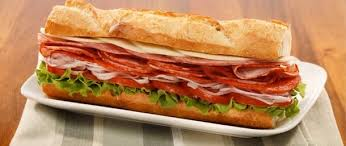

ItalianSub
This is the traditional italian sub sandwich
I ate this everyday of freshman year at poly deli
Servings:
1Ingredients:
- bread of your choice (I like Dutch Crunch)
- 5 Slices of Salami
- 5 Slices of Pepperoni
- 3 Slices of Ham
- 2 Slices of Provolone
- 3 Slices of Tomatoes
- .25 Cups of sliced red onions(optional)
- lettuce
Directions:
- slice bread as you wish for your sandwich
- layer bottom slice of bread with salami, pepperoni, ham and top with provalone
- toast the meat, bread and provalone
- once done toasting layer with lettuce, tomatoes, and onions
- serve